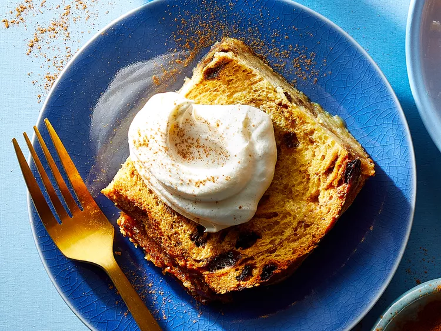

Description
This fabulous cinnamon-raisin French toast recipe should be prepared the night before baking. It's always a hit with friends and family and is best served with something salty on the side such as bacon or sausage. Can also be topped off with real maple syrup for an extra sweet treat.
Enjoy!
Ingredients
- 1 cup of white sugar
- 1 cup packed brown sugar
- 1 cup unsalted butter
- 12 slices cinnamon raisin bread
- 6 large eggs
- 2 cups of milk
- 1 teaspoon vanilla extract
Directions
- Bring white sugar, brown sugar, and butter to a boil in a saucepan over medium heat; boil, stirring occasionally, for 5 minutes.
- Pour 1/3 of the mixture into a buttered 9x13-inch baking pan. Layer 1/2 of the bread slices on top of the mixture. Pour another 1/3 of the sugar mixture on top of the first layer of bread, then add remaining bread slices and set aside. Reserve remaining sugar mixture.
- Beat eggs, milk, and vanilla extract together in a medium mixing bowl and pour over bread. Cover the dish with foil and refrigerate, 8 hours to overnight.
- Preheat the oven to 350 degrees F (175 degrees C). Uncover the dish.
- Bake in the preheated oven until a toothpick inserted into the center comes out clean, about 45 minutes. Serve with remaining glaze as syrup.